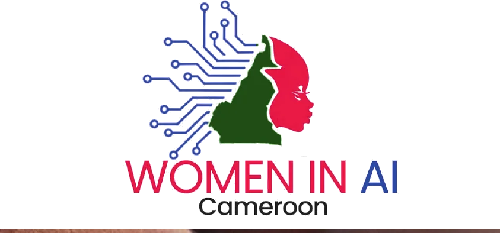
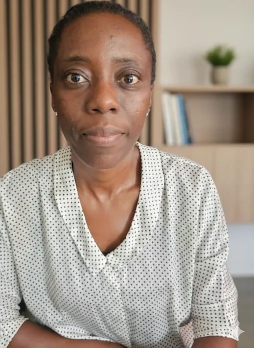
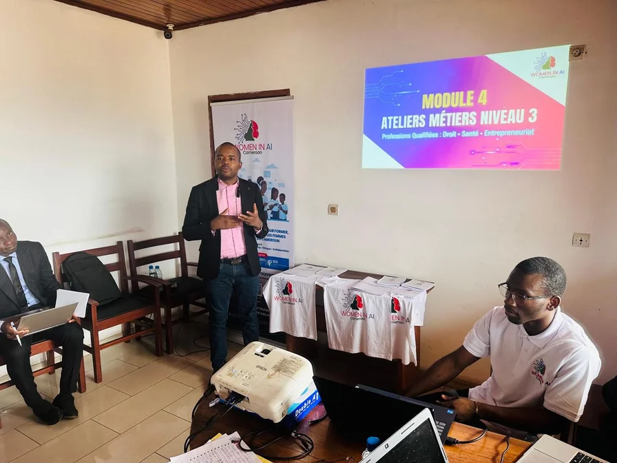
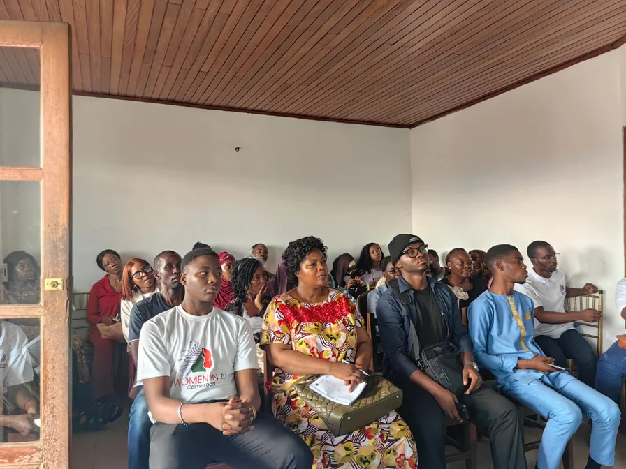
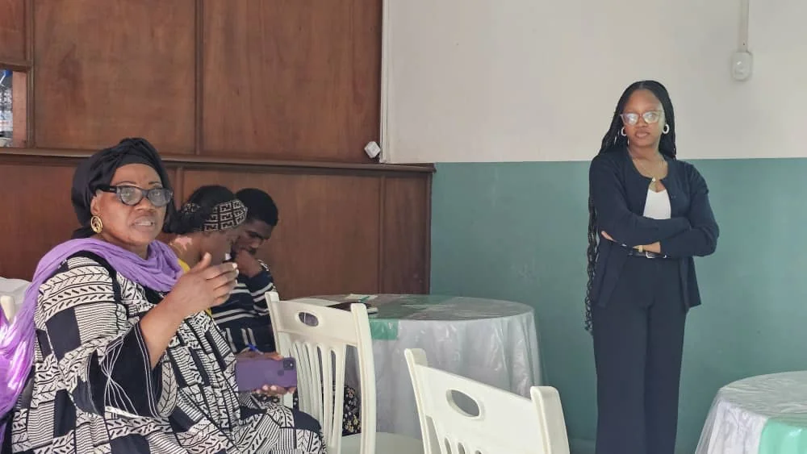

Accessibilité pour toutes
Pas besoin d'être ingénieure pour comprendre l'IA. Nous formons toutes les femmes sans prérequis technique.

Women in AI Cameroon (WAI-CAM) est un mouvement citoyen qui vise à démystifier l'intelligence artificielle et à la rendre accessible à toutes les femmes, quel que soit leur âge, leur métier ou leur niveau d'éducation.
Pas besoin d'être ingénieure pour comprendre l'IA. Nous formons toutes les femmes sans prérequis technique.
Nos programmes répondent aux défis concrets du Cameroun avec des solutions IA pertinentes et durables.
Rejoignez une communauté bienveillante de femmes passionnées par la tech et l'IA, et devenez actrice du changement dans votre région.
S'inscrire maintenantChaque femme formée, chaque ambassadrice déployée, chaque projet soutenu représente un pas vers une Afrique numérique plus inclusive et équitable.
En savoir plusFemmes impactées
Régions couvertes
Ambassadrices
Femmes visées d'ici 2030
Ils nous font confiance


Présidente

Secrétaire Générale
Trésorière
Votre don finance directement les formations, les déplacements des ambassadrices et les projets locaux d'IA.
Partagez votre expertise avec les femmes qui aspirent à comprendre et maîtriser l'IA dans leur quotidien.
Associez votre organisation à l'inclusion numérique et à l'autonomisation des femmes camerounaises.
Partagez notre mission sur les réseaux sociaux et aidez-nous à toucher encore plus de femmes au Cameroun et en Afrique.
"J'utilise l'IA comme un outil d'optimisation pour gagner en efficacité et en productivité. Je la considère comme une opportunité majeure d'autonomisation des femmes au Cameroun."
"La recherche m'a conduite à l'IA, et l'IA m'a permis de repenser ma pratique. Aujourd'hui, je me définis comme une « chercheure augmentée », convaincue que l'IA est un allié du quotidien pour toutes les femmes."
"J'utilise l'intelligence artificielle comme un facilitateur au quotidien dans la gestion et le développement de mes entreprises. Cet outil me permet de gagner du temps, de créer de la valeur et de structurer mes activités."
"L'IA est un levier de rigueur et de transparence. En tant que commissaire aux comptes, je vois comment ces outils peuvent renforcer la gouvernance et la confiance dans nos organisations."
"Professeure de lycée, je considère l'intelligence artificielle comme un levier essentiel de lutte contre la pauvreté. Chaque téléphone Android est un outil puissant permettant à la femme de construire son avenir."

Intelligence ArtificielleLes outils d'intelligence artificielle offrent des opportunités sans précédent pour les femmes entrepreneures camerounaises...
Lire la suite
FormationPlus de 200 lycéennes ont participé à notre premier atelier de sensibilisation à l'IA dans la région de l'Ouest...
Lire la suite
Éthique & IALe rapport UNESCO révèle un fossé numérique alarmant. WAI-CAM propose des solutions concrètes pour y remédier...
Lire la suite